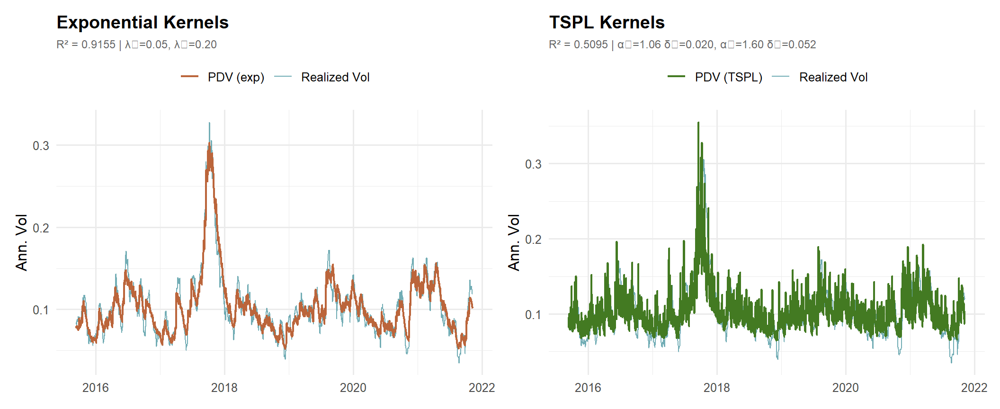
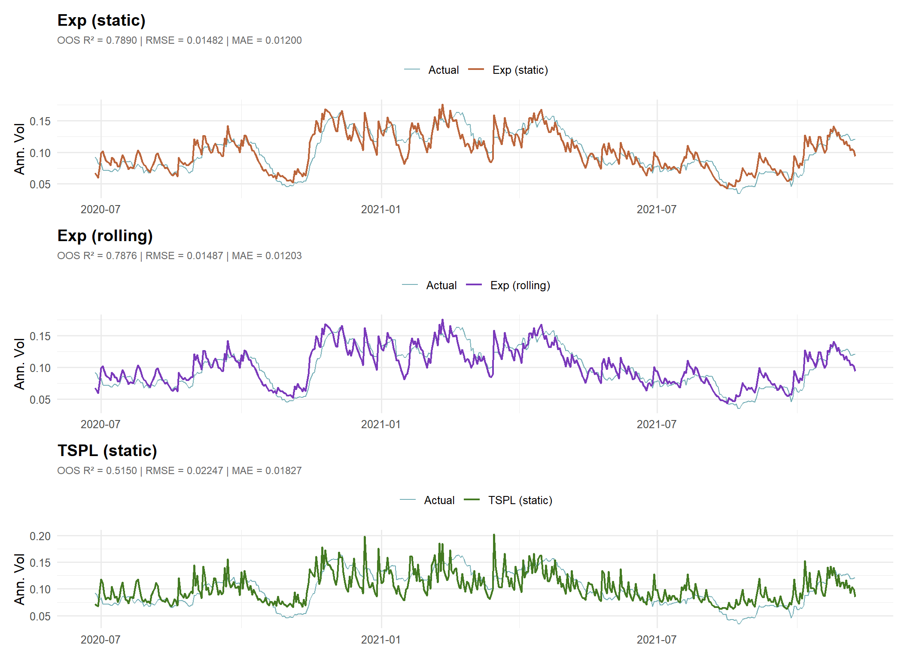
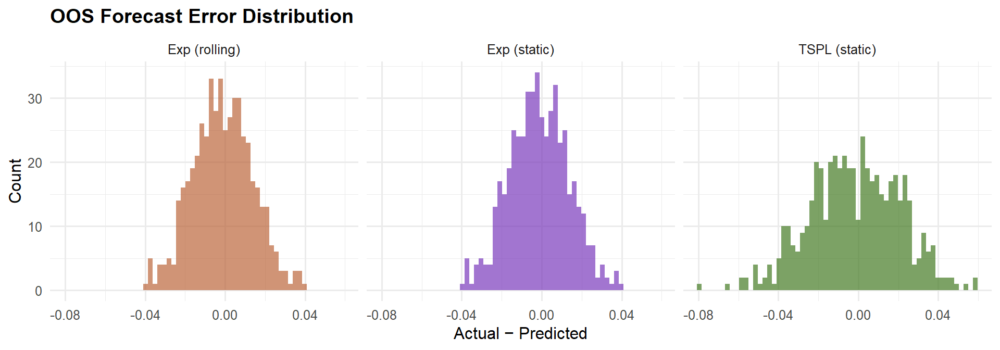
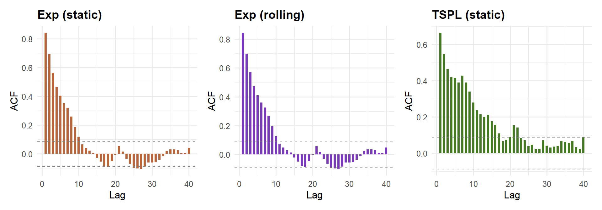

Guyon & Lekeufack (2023) — “Volatility Is (Mostly) Path-Dependent” — show that roughly 90% of S&P 500 implied volatility dynamics can be explained by the price path alone, without any news or macro inputs.
The model regresses current volatility on two path-derived features:
\[ \text{Vol}_t = \beta_0 + \beta_1 R_{1,t} + \beta_2 \sqrt{R_{2,t}} \]
where:
\[ R_{1,t} = \sum_{s=1}^{K} K_1(s)\, r_{t-s} \qquad \text{(trend / leverage)} \]
\[ R_{2,t} = \sum_{s=1}^{K} K_2(s)\, r_{t-s}^2 \qquad \text{(activity / clustering)} \]
The paper evaluates two kernel families:
| Kernel | Formula | Parameters |
|---|---|---|
| Exponential | \(K(\tau) = \lambda e^{-\lambda \tau}\) | \(\lambda > 0\) (decay rate) |
| Time-shifted power law (TSPL) | \(K(\tau) = Z^{-1}(\tau + \delta)^{-\alpha}\) | \(\alpha > 1\), \(\delta > 0\) |
TSPL kernels produce heavier-tailed memory and better fit empirical volatility.
Rough volatility models posit a fractional Brownian motion with \(H \approx 0.1\). Guyon & Lekeufack show their model — with plain exponential kernels — produces a signal that looks equally rough, suggesting the roughness may be a spurious artifact of path-dependency, not a true fractional process.
exp_kernel <- function(lambda, K) {
tau <- seq_len(K)
w <- lambda * exp(-lambda * tau)
w / sum(w)
}
tspl_kernel <- function(alpha, delta, K) {
tau <- seq_len(K)
w <- (tau + delta)^(-alpha)
w / sum(w)
}
compute_features <- function(r, kernel_fn, K = 252) {
w <- kernel_fn(K)
r2 <- r^2
R1 <- as.numeric(stats::filter(r, w, sides = 1))
R2 <- as.numeric(stats::filter(r2, w, sides = 1))
data.frame(
t = seq_along(r),
R1 = R1,
R2 = R2,
Sigma = sqrt(pmax(R2, 0))
)
}
roll_vol <- function(r, window = 21, ann = 252) {
n <- length(r)
rv <- rep(NA_real_, n)
for (i in (window + 1):n) {
rv[i] <- sd(r[(i - window):(i - 1)]) * sqrt(ann)
}
rv
}
compute_hurst <- function(x) {
x <- x[!is.na(x)]
h <- pracma::hurstexp(x, display = FALSE)
list(Hs = h$Hs, Hrs = h$Hrs, He = h$He)
}set.seed(42)
T_sim <- 2500
dates <- seq.Date(as.Date("2015-01-05"), by = "day", length.out = T_sim)
sigma2 <- numeric(T_sim)
r_sim <- numeric(T_sim)
sigma2 <- 1e-6 / (1 - 0.08 - 0.90)[1]
r_sim <- rnorm(1, 0, sqrt(sigma2))[1]
for (t in 2:T_sim) {
sigma2[t] <- 1e-6 + 0.08 * r_sim[t - 1]^2 + 0.90 * sigma2[t - 1]
r_sim[t] <- rnorm(1, 0, sqrt(sigma2[t]))
}
true_vol <- sqrt(sigma2) * sqrt(252)
realized_vol <- roll_vol(r_sim, window = 21)
cat(sprintf("T = %d | mean RV = %.4f | sd RV = %.4f\n", T_sim, mean(realized_vol, na.rm = TRUE), sd(realized_vol, na.rm = TRUE)))## T = 2500 | mean RV = 0.1031 | sd RV = 0.0385BURN <- 30
K <- 252
lambda1 <- 0.05
lambda2 <- 0.20
feats_exp <- compute_features(
r_sim,
kernel_fn = function(K) exp_kernel(lambda1, K),
K = K
)
df_exp <- data.frame(vol = realized_vol, R1 = feats_exp$R1, Sigma = feats_exp$Sigma, date = dates) %>%
slice(-(1:BURN)) %>%
na.omit()
fit_exp <- lm(vol ~ R1 + Sigma, data = df_exp)
df_exp$fitted <- fitted(fit_exp)
cat("=== Exponential Kernels ===\n")## === Exponential Kernels ===print(summary(fit_exp)$coefficients)## Estimate Std. Error t value Pr(>|t|)
## (Intercept) -0.00611243 0.0007755484 -7.881430 5.001715e-15
## R1 1.95494932 0.2168962062 9.013294 4.170254e-19
## Sigma 16.57597899 0.1114386515 148.745330 0.000000e+00cat(sprintf("\nR² = %.4f\n", summary(fit_exp)$r.squared))##
## R² = 0.9155alpha1 <- 1.06
delta1 <- 0.020
alpha2 <- 1.60
delta2 <- 0.052
feats_tspl <- compute_features(
r_sim,
kernel_fn = function(K) tspl_kernel(alpha1, delta1, K),
K = K
)
Sigma_tspl <- sqrt(pmax(
as.numeric(stats::filter(r_sim^2, tspl_kernel(alpha2, delta2, K), sides = 1)),
0
))
df_tspl <- data.frame(vol = realized_vol, R1 = feats_tspl$R1, Sigma = Sigma_tspl, date = dates) %>%
slice(-(1:BURN)) %>%
na.omit()
fit_tspl <- lm(vol ~ R1 + Sigma, data = df_tspl)
df_tspl$fitted <- fitted(fit_tspl)
cat("=== TSPL Kernels (paper VIX params) ===\n")## === TSPL Kernels (paper VIX params) ===print(summary(fit_tspl)$coefficients)## Estimate Std. Error t value Pr(>|t|)
## (Intercept) 0.04235184 0.001411687 30.000874 1.378608e-166
## R1 1.28714061 0.349734713 3.680334 2.384140e-04
## Sigma 9.60099610 0.202334649 47.451073 0.000000e+00cat(sprintf("\nR² = %.4f\n", summary(fit_tspl)$r.squared))##
## R² = 0.5095betas = coef(fit_exp)
betasFit = coef(fit_tspl)
tibble::tibble(
Kernel = c("Exponential", "TSPL (paper)"),
beta0 = c(betas[1], betasFit[1]),
beta1 = c(betas[2], betasFit[2]),
beta2 = c(betas[3], betasFit[3]),
R2 = c(summary(fit_exp)$r.squared, summary(fit_tspl)$r.squared)
) %>%
mutate(across(where(is.numeric), round, 5)) %>%
knitr::kable(caption = "In-sample regression summary")| Kernel | beta0 | beta1 | beta2 | R2 |
|---|---|---|---|---|
| Exponential | -0.00611 | 1.95495 | 16.57598 | 0.91545 |
| TSPL (paper) | 0.04235 | 1.28714 | 9.60100 | 0.50951 |
p_exp <- ggplot(df_exp, aes(x = date)) +
geom_line(aes(y = vol, colour = "Realized Vol"), linewidth = 0.5, alpha = 0.8) +
geom_line(aes(y = fitted, colour = "PDV (exp)"), linewidth = 0.8) +
scale_colour_manual(values = c("Realized Vol" = "#4f98a3", "PDV (exp)" = "#bb653b")) +
labs(
title = "Exponential Kernels",
subtitle = sprintf("R² = %.4f | λ₁=%.2f, λ₂=%.2f", summary(fit_exp)$r.squared, lambda1, lambda2),
x = NULL,
y = "Ann. Vol",
colour = NULL
)
p_tspl <- ggplot(df_tspl, aes(x = date)) +
geom_line(aes(y = vol, colour = "Realized Vol"), linewidth = 0.5, alpha = 0.8) +
geom_line(aes(y = fitted, colour = "PDV (TSPL)"), linewidth = 0.8) +
scale_colour_manual(values = c("Realized Vol" = "#4f98a3", "PDV (TSPL)" = "#437a22")) +
labs(
title = "TSPL Kernels",
subtitle = sprintf("R² = %.4f | α₁=%.2f δ₁=%.3f, α₂=%.2f δ₂=%.3f", summary(fit_tspl)$r.squared, alpha1, delta1, alpha2, delta2),
x = NULL,
y = "Ann. Vol",
colour = NULL
)
p_exp + p_tspl
h_fitted <- compute_hurst(df_tspl$fitted)
h_true <- compute_hurst(true_vol)
tibble::tibble(
Series = c("PDV fitted σ̂ (TSPL)", "True GARCH σ"),
`H (simple R/S)` = c(h_fitted$Hs, h_true$Hs),
`H (corrected R/S)` = c(h_fitted$Hrs, h_true$Hrs)
) %>%
mutate(across(where(is.numeric), function(x) round(x, 4))) %>%
knitr::kable(caption = "H < 0.5 = rough/anti-persistent. Paper reports H ~ 0.1.")| Series | H (simple R/S) | H (corrected R/S) |
|---|---|---|
| PDV fitted σ̂ (TSPL) | 0.7455 | 0.8864 |
| True GARCH σ | 0.7650 | 0.8811 |
oos_forecast <- function(r, vol, train_end, kernel1_fn, kernel2_fn, K = 252, burn_in = 30, refit_every = Inf) {
n <- length(r)
w1 <- kernel1_fn(K)
w2 <- kernel2_fn(K)
wdot <- function(x, w) {
m <- min(length(x), length(w))
if (m == 0) {
return(NA_real_)
}
sum(w[1:m] * rev(tail(x, m)))
}
make_df <- function(idx) {
R1 <- vapply(idx, function(t) wdot(r[1:(t - 1)], w1), numeric(1))
Sigma <- vapply(idx, function(t) sqrt(max(0, wdot(r[1:(t - 1)]^2, w2))), numeric(1))
data.frame(t = idx, vol = vol[idx], R1 = R1, Sigma = Sigma)
}
train_idx <- seq(burn_in + 1L, train_end)
train_df <- make_df(train_idx) %>% na.omit()
fit <- lm(vol ~ R1 + Sigma, data = train_df)
test_idx <- seq(train_end + 1L, n)
pred <- rep(NA_real_, n)
for (i in seq_along(test_idx)) {
t <- test_idx[i]
if (is.finite(refit_every) && i > 1 && (i - 1) %% refit_every == 0) {
refit_df <- make_df(seq(burn_in + 1L, t - 1L)) %>% na.omit()
if (nrow(refit_df) > 5) fit <- lm(vol ~ R1 + Sigma, data = refit_df)
}
R1_t <- wdot(r[1:(t - 1)], w1)
Sigma_t <- sqrt(max(0, wdot(r[1:(t - 1)]^2, w2)))
pred[t] <- predict(fit, newdata = data.frame(R1 = R1_t, Sigma = Sigma_t))
}
oos_df <- data.frame(
t = test_idx,
date = dates[test_idx],
vol_actual = vol[test_idx],
vol_pred = pred[test_idx]
) %>%
na.omit()
oos_df$error <- oos_df$vol_actual - oos_df$vol_pred
ss_res <- sum(oos_df$error^2)
ss_tot <- sum((oos_df$vol_actual - mean(train_df$vol, na.rm = TRUE))^2)
list(
fit_is = fit,
oos = oos_df,
rmse = sqrt(mean(oos_df$error^2)),
mae = mean(abs(oos_df$error)),
r2_oos = 1 - ss_res / ss_tot,
r2_is = summary(fit)$r.squared
)
}train_end <- floor(0.8 * T_sim)
res_exp <- oos_forecast(
r = r_sim,
vol = realized_vol,
train_end = train_end,
kernel1_fn = function(K) exp_kernel(0.05, K),
kernel2_fn = function(K) exp_kernel(0.20, K),
K = K,
burn_in = BURN,
refit_every = Inf
)
res_exp_roll <- oos_forecast(
r = r_sim,
vol = realized_vol,
train_end = train_end,
kernel1_fn = function(K) exp_kernel(0.05, K),
kernel2_fn = function(K) exp_kernel(0.20, K),
K = K,
burn_in = BURN,
refit_every = 20
)
res_tspl <- oos_forecast(
r = r_sim,
vol = realized_vol,
train_end = train_end,
kernel1_fn = function(K) tspl_kernel(1.06, 0.020, K),
kernel2_fn = function(K) tspl_kernel(1.60, 0.052, K),
K = K,
burn_in = BURN,
refit_every = Inf
)
tibble::tibble(
Model = c("Exp (static)", "Exp (rolling 20d)", "TSPL (static)"),
`IS R²` = c(res_exp$r2_is, res_exp_roll$r2_is, res_tspl$r2_is),
`OOS R²` = c(res_exp$r2_oos, res_exp_roll$r2_oos, res_tspl$r2_oos),
`OOS RMSE` = c(res_exp$rmse, res_exp_roll$rmse, res_tspl$rmse),
`OOS MAE` = c(res_exp$mae, res_exp_roll$mae, res_tspl$mae)
) %>%
mutate(across(where(is.numeric), function(x) round(x, 5))) %>%
knitr::kable(caption = "Out-of-sample performance summary")| Model | IS R² | OOS R² | OOS RMSE | OOS MAE |
|---|---|---|---|---|
| Exp (static) | 0.81776 | 0.78896 | 0.01482 | 0.01200 |
| Exp (rolling 20d) | 0.81384 | 0.78756 | 0.01487 | 0.01203 |
| TSPL (static) | 0.60115 | 0.51502 | 0.02247 | 0.01827 |
make_oos_plot <- function(res, label, colour) {
ggplot(res$oos, aes(x = date)) +
geom_line(aes(y = vol_actual, colour = "Actual"), linewidth = 0.5, alpha = 0.8) +
geom_line(aes(y = vol_pred, colour = label), linewidth = 0.8) +
scale_colour_manual(values = c("Actual" = "#4f98a3", setNames(colour, label))) +
labs(
title = label,
subtitle = sprintf("OOS R² = %.4f | RMSE = %.5f | MAE = %.5f", res$r2_oos, res$rmse, res$mae),
x = NULL,
y = "Ann. Vol",
colour = NULL
)
}
make_oos_plot(res_exp, "Exp (static)", "#bb653b") /
make_oos_plot(res_exp_roll, "Exp (rolling)", "#7a39bb") /
make_oos_plot(res_tspl, "TSPL (static)", "#437a22")
bind_rows(
res_exp$oos %>% mutate(model = "Exp (static)"),
res_exp_roll$oos %>% mutate(model = "Exp (rolling)"),
res_tspl$oos %>% mutate(model = "TSPL (static)")
) %>%
ggplot(aes(x = error, fill = model)) +
geom_histogram(bins = 60, alpha = 0.7, position = "identity") +
facet_wrap(~model, ncol = 3) +
scale_fill_manual(values = c("#bb653b", "#7a39bb", "#437a22")) +
labs(title = "OOS Forecast Error Distribution", x = "Actual − Predicted", y = "Count") +
theme(legend.position = "none")
acf_plot <- function(res, label, colour) {
ac <- acf(res$oos$error, lag.max = 40, plot = FALSE)
ci <- 1.96 / sqrt(nrow(res$oos))
data.frame(lag = ac$lag[-1], acf = ac$acf[-1]) %>%
ggplot(aes(x = lag, y = acf)) +
geom_col(fill = colour, width = 0.6) +
geom_hline(yintercept = c(-ci, ci), linetype = "dashed", colour = "grey50") +
labs(title = label, x = "Lag", y = "ACF")
}
acf_plot(res_exp, "Exp (static)", "#bb653b") +
acf_plot(res_exp_roll, "Exp (rolling)", "#7a39bb") +
acf_plot(res_tspl, "TSPL (static)", "#437a22")
library(quantmod)
getSymbols("^GSPC", from = "2005-01-01")## [1] "GSPC"r_real <- as.numeric(dailyReturn(Cl(GSPC), type = "log"))
dates <- index(GSPC)
rv_target <- roll_vol(r_real, window = 21)
getSymbols("^VIX", from = "2005-01-01")## [1] "VIX"vix_target <- as.numeric(Cl(VIX)) / 100
n <- min(length(r_real), length(vix_target))
r_real <- r_real[1:n]
vix_target <- vix_target[1:n]
feats_real <- compute_features(
r = r_real,
kernel_fn = function(K) tspl_kernel(1.06, 0.020, K),
K = 252
)
Sigma_real <- sqrt(pmax(
as.numeric(stats::filter(r_real^2, tspl_kernel(1.60, 0.052, 252), sides = 1)),
0
))
df_real <- data.frame(vol = vix_target, R1 = feats_real$R1, Sigma = Sigma_real) %>%
slice(-(1:30)) %>%
na.omit()
fit_real <- lm(vol ~ R1 + Sigma, data = df_real)
summary(fit_real)##
## Call:
## lm(formula = vol ~ R1 + Sigma, data = df_real)
##
## Residuals:
## Min 1Q Median 3Q Max
## -0.34381 -0.05021 -0.01920 0.03393 0.62948
##
## Coefficients:
## Estimate Std. Error t value Pr(>|t|)
## (Intercept) 0.147055 0.002079 70.750 < 2e-16 ***
## R1 3.307816 0.472209 7.005 0.0000000000028 ***
## Sigma 4.752267 0.169469 28.042 < 2e-16 ***
## ---
## Signif. codes: 0 '***' 0.001 '**' 0.01 '*' 0.05 '.' 0.1 ' ' 1
##
## Residual standard error: 0.08172 on 4952 degrees of freedom
## Multiple R-squared: 0.1378, Adjusted R-squared: 0.1375
## F-statistic: 395.8 on 2 and 4952 DF, p-value: < 2.2e-16